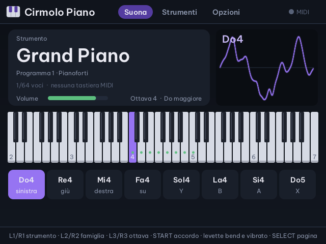
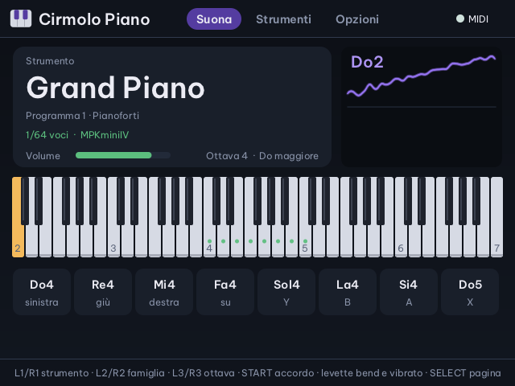
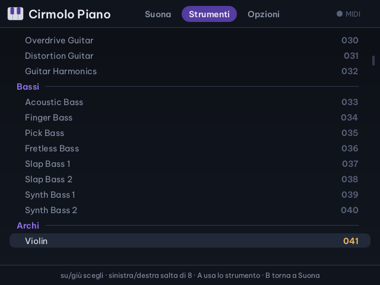
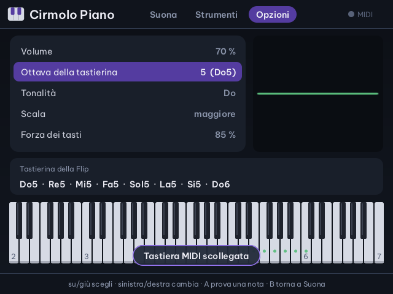

Cirmolo · app musicale per Miyoo Flip
Cirmolo Piano
Un modulo sonoro General MIDI in tasca: colleghi una tastiera MIDI USB e suoni pianoforti, organi, chitarre, archi, fiati, sintetizzatori e batterie. I suoni sono quelli del SoundFont GeneralUser GS di S. Christian Collins.
Senza tastiera, i tasti della Flip suonano otto note della scala che scegli. La tastiera disegnata accende le note che stanno suonando.
Nella Home di Cirmolo, sotto Musica. Le schermate vengono dal codice dell'app, compilato sul PC, con il SoundFont vero.

Suonare
Una tastiera MIDI, oppure otto tasti
La tastiera MIDI suona direttamente, su tutti i suoi canali. I tasti della Flip suonano otto gradi della scala scelta nelle Opzioni, dall'ottava che scegli: croce sinistra, giù, destra, su, poi Y, B, A e X.

Pagina Suona
| Croce, Y B A X | otto note della scala |
| L1 · R1 | strumento precedente · successivo |
| L2 · R2 | famiglia precedente · successiva (otto strumenti alla volta) |
| L3 · R3 | ottava giù · su |
| START | un accordo di prova sulla scala |
| Levetta sinistra | in orizzontale piega la nota |
| Levetta destra | in su il vibrato |
| SELECT | pagina successiva: Suona, Strumenti, Opzioni |
| MENU | esce (A o giù conferma); strumento e volume restano salvati |
Strumenti e opzioni
287 preset, divisi per famiglia
La pagina Strumenti elenca i preset del SoundFont per famiglie General MIDI: pianoforti, percussioni cromatiche, organi, chitarre, bassi, archi, insiemi, ottoni, ance, flauti, synth lead, synth pad, effetti synth, etnici, percussioni, effetti sonori e, in fondo, le batterie. Su e giù scelgono, sinistra e destra saltano di otto, A usa lo strumento, B torna a Suona.


Otto scale
Maggiore, minore, dorica, misolidia, pentatonica maggiore e minore, blues, cromatica, su qualsiasi tonalità.
Forza dei tasti
I tasti della Flip non sentono la pressione: la loro forza si sceglie, dal 30 al 100%.
GeneralUser GS
Il SoundFont 2.0.3, originale e non modificato, è incluso con la sua licenza, che ne permette la ridistribuzione.
Tastiera MIDI
Un modulo General MIDI completo
Collega la tastiera alla porta USB-C, anche ad app aperta. Ogni canale ha il suo strumento, come in un modulo General MIDI: si può suonare con più tastiere o da un sequencer.
Cosa arriva al motore
| Note | con la dinamica, su tutti i 16 canali |
| Canale 10 | batteria General MIDI, con le note accese a parte |
| Program change | cambia strumento sul canale; sul canale 1 si vede il nome sullo schermo |
| Banco (CC0, CC32) | le variazioni GS degli strumenti |
| Pitch bend | piega la nota |
| Modulazione (CC1) | vibrato |
| Altri controlli | volume, pan, espressione e sustain passano al motore TinySoundFont; CC120 e CC123 spengono tutto |
TinySoundFont non ha il chorus e il riverbero dei SoundFont: alcuni strumenti di GeneralUser GS suonano un po' più asciutti che in FluidSynth.
File sulla scheda SD
Lo stato e il SoundFont
Saves/piano/stato.txtstrumento, volume, ottava, scala e forza dei tastiApp/CirmoloPiano/sf2/GeneralUser-GS.sf2il SoundFont, conLICENZA.txtaccantoSaves/spruce/cirmolo-piano.logil registro dell'appApp/CirmoloPiano/srci sorgenti in C, con le prove automatiche
Le altre app